Analyse the Victorian National Electricity Market (NEM) using real AEMO half-hourly dispatch data from 2013. Using MATLAB, the project cleaned and processed 17,520 settlement intervals of price and demand data to identify demand patterns, price volatility, seasonal behaviour, and cost-saving opportunities through strategic load shifting.
The dataset was assigned by student ID (last digit 3 → 2013 Victorian data) and downloaded directly from the AEMO public portal in CSV format. The VIC1 region was the analysis target.
After import and cleaning, the full-year dataset contained zero gaps. Summary statistics across all 17,520 intervals:
The demand distribution is moderately right-skewed (skewness = 0.539) — most intervals cluster near the mean with a tail toward peak events. The price distribution is severely right-skewed (skewness = 44.72) — median sits well below mean due to rare extreme spikes. Two intervals recorded negative prices, indicating overnight surplus from wind generation.
Seasonal Demand Patterns (Section 2): Monthly, weekly, and intraday demand boxplots were computed. Victorian demand displays a classic bimodal seasonal pattern — summer peaks from air conditioning (Jan–Feb: ~5,665 MW avg) and winter peaks from heating (Jun–Jul: ~5,852 MW avg). Spring is the low point. The monthly mean range spans 5,152 MW (December) to 5,852 MW (June) — a 13.6% seasonal swing.
Weekday vs Weekend: Weekday average demand was 5,720 MW vs weekend 4,989 MW — a 14.7% gap driven by commercial and industrial load dropping on weekends. Intraday profiling identified the daily trough at 03:00–04:00 (mean 4,302 MW) and peak at 17:30 (mean 6,270 MW) with an IQR of 1,274 MW.
Price Pattern Analysis (Section 2): Spot prices were resolved at 30-min resolution. Afternoon peak pricing window was 15:00–19:30, reaching a mean of $71.9/MWh at 16:00. Off-peak lowest mean was $42.6/MWh at 03:30. Price CV of 116.8% far exceeds demand CV of 16.3%, reflecting the NEM's non-linear scarcity pricing mechanism.
Correlation Analysis (Section 3): Pearson and Spearman correlations between demand and price were computed across multiple time windows to investigate how aggregation level affects the apparent relationship.
Load-Shift Simulation (Section 4): A demand response simulation was built in MATLAB to model shifting 5–25% of peak demand to cheapest off-peak slots, iterating across all 17,520 intervals to calculate annual cost savings.
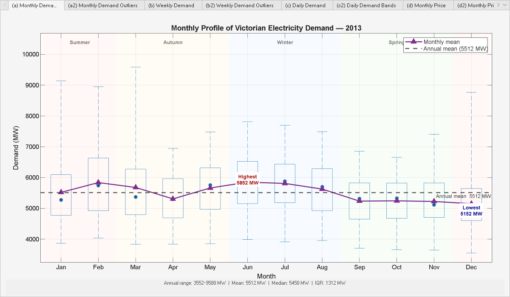
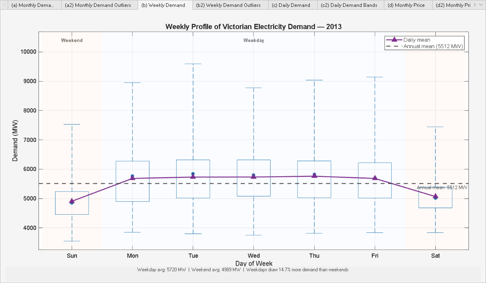
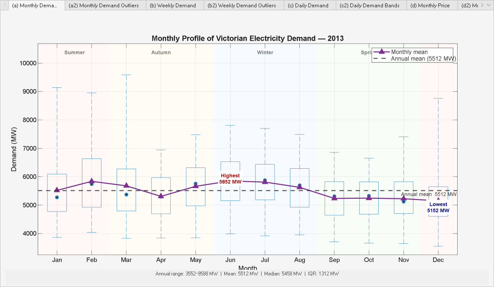
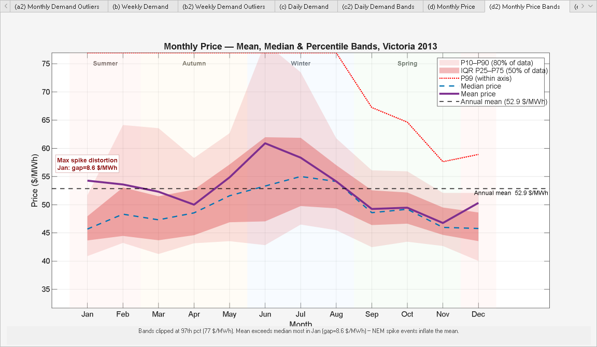
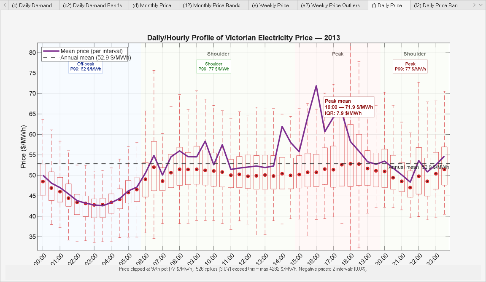
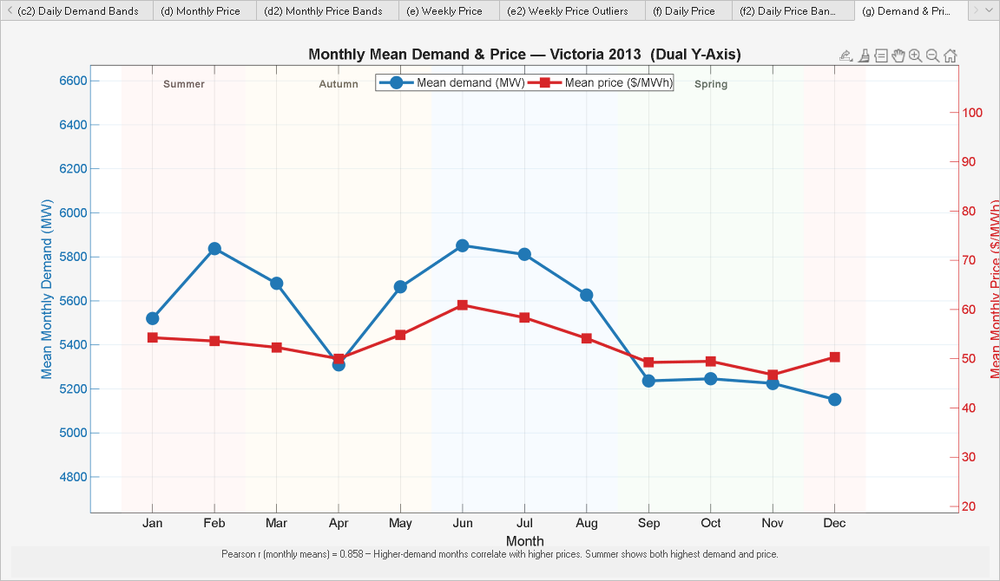
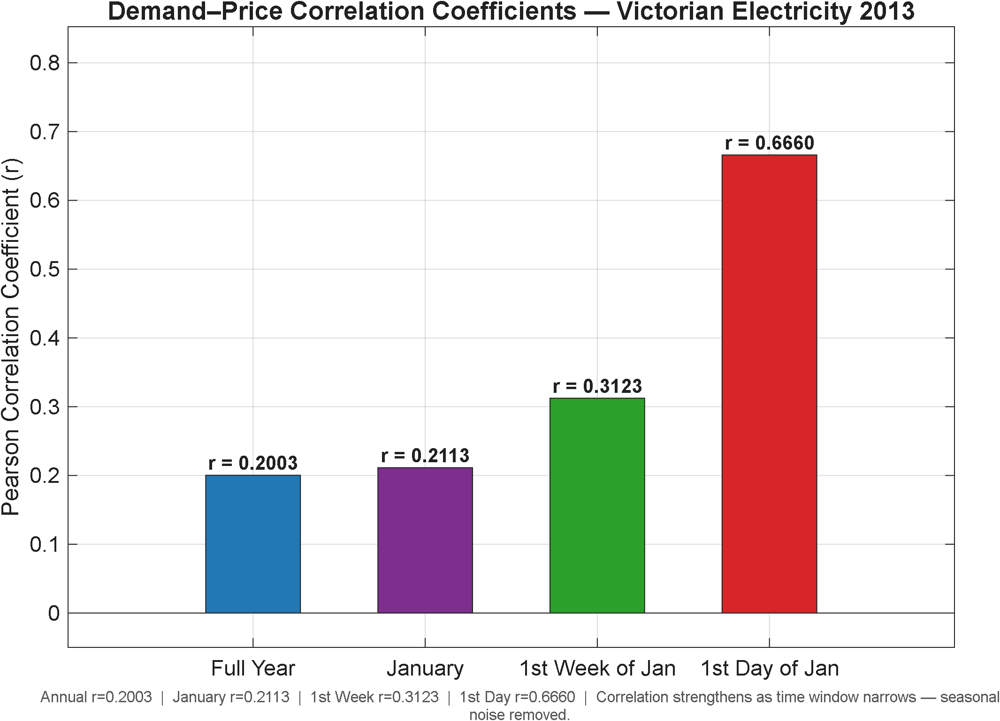
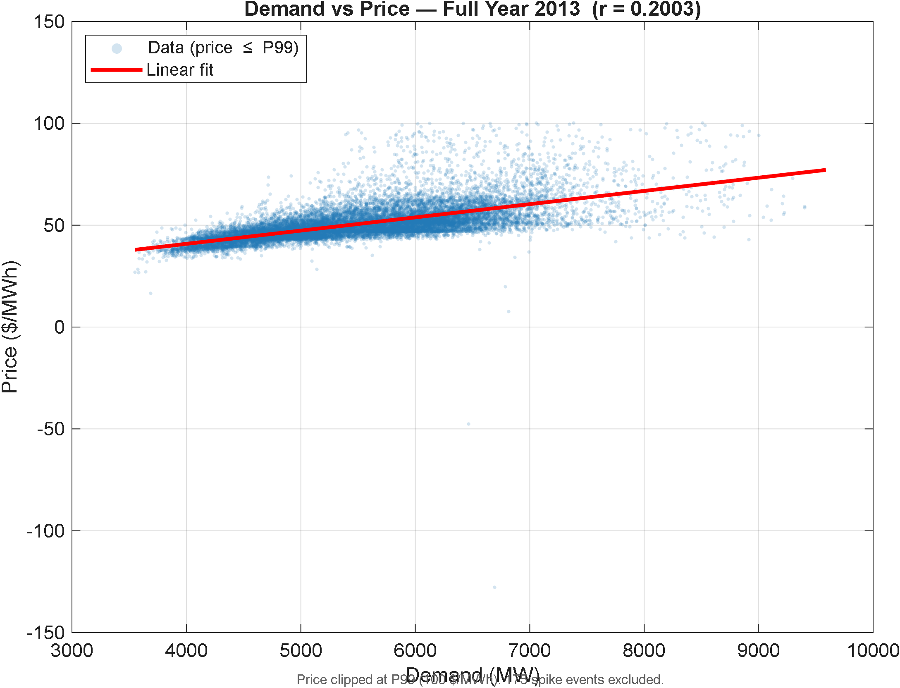
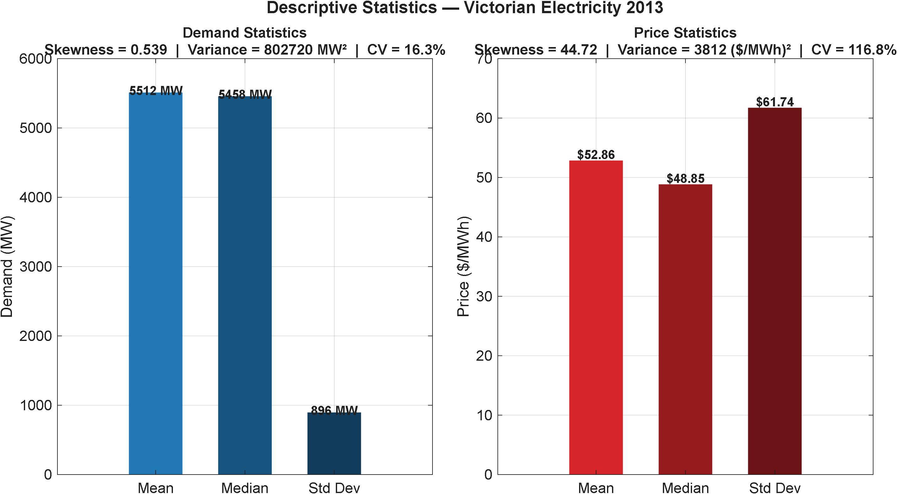
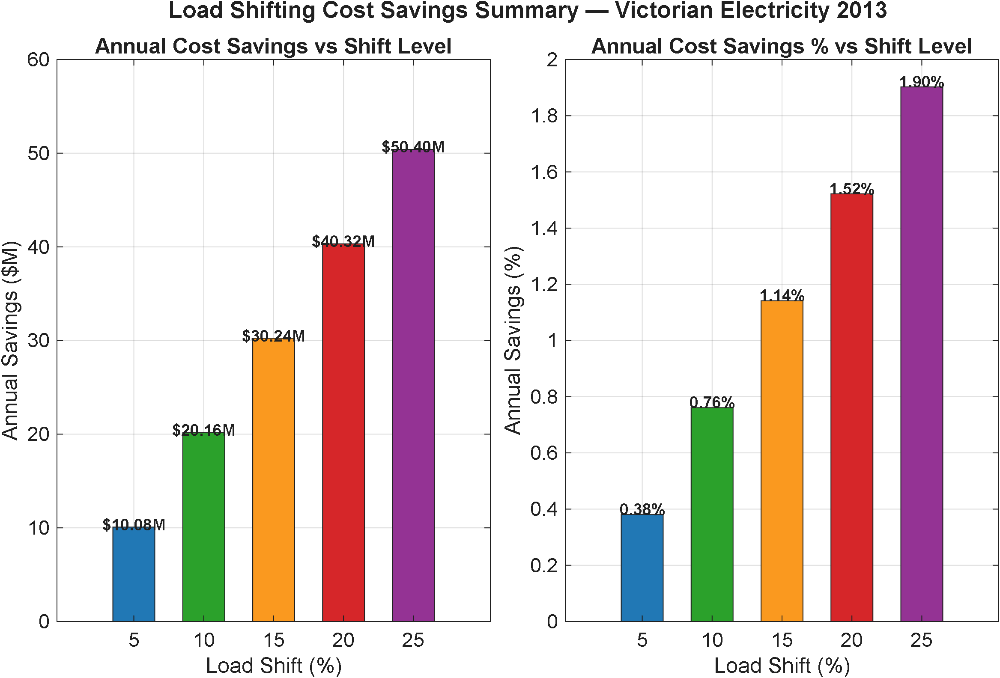
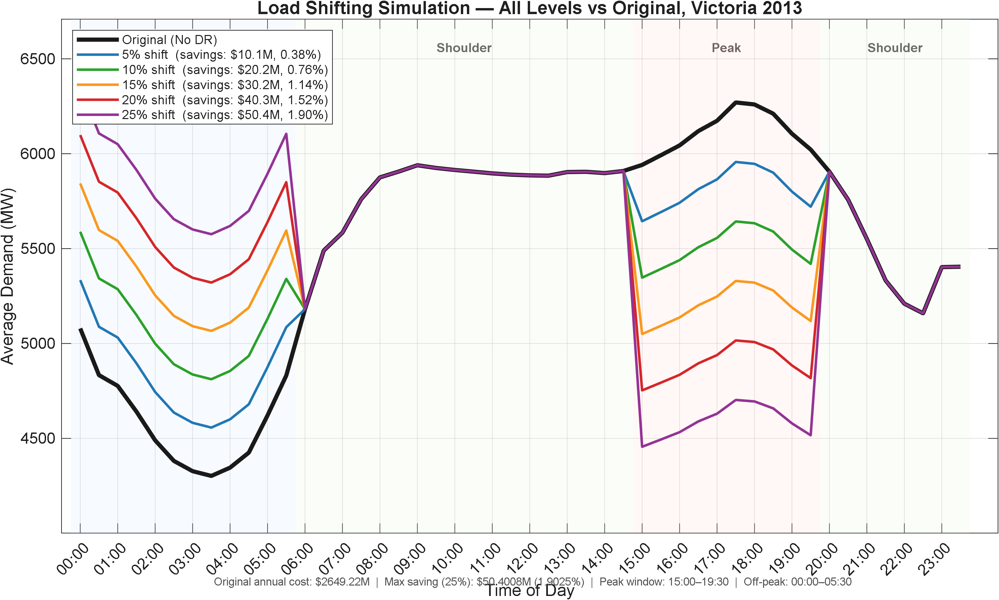
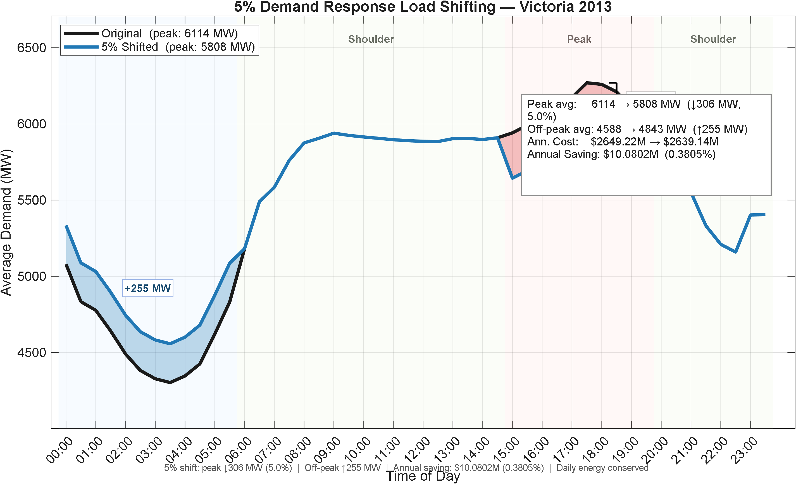
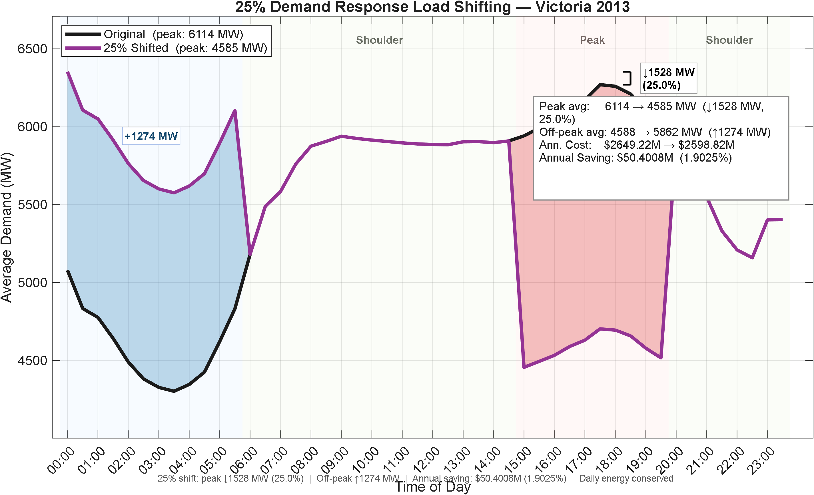
One of the report's central findings was the strong dependence of demand-price correlation on time aggregation level. At the raw 30-min interval resolution, price spikes are rare and extreme — masking the underlying relationship. As the analysis window narrows (and extreme-spike effects dominate), the correlation strengthens markedly:
| Time Window | Data Points | Pearson r | Interpretation |
|---|---|---|---|
| Full year (all intervals) | 17,520 | 0.2003 | Weak — spikes obscure the trend |
| January only | 1,488 | 0.2113 | Marginally stronger in peak summer |
| First week (Jan 1–7) | 336 | 0.3123 | Moderate — fewer outlier events |
| First day (Jan 1) | 48 | 0.6660 | Strong — price tracks demand within a day |
| Monthly means | 12 | 0.858 | Very strong — averaging suppresses noise |
The jump from r = 0.200 (full year, 30-min resolution) to r = 0.858 (monthly means) illustrates Simpson's Paradox at market scale — the aggregate relationship looks weak because a small number of extreme-price intervals pull the scatter in unpredictable directions, while the smooth monthly profile reveals a clear demand-driven price structure.
Each additional 5% of load shifted delivers a consistent $10.08M in annual savings. At 25%, off-peak demand rises from a base of 4,588 MW to 5,862 MW. The report recommends a practical range of 15–20% — the 25% scenario risks feeder congestion as the off-peak trough approaches daytime peak levels, limiting real-world deployment to smaller shifts without network reinforcement.
✅ 17,520 intervals processed — zero gaps after cleaning. AEMO dataset was complete for the full 2013 calendar year.
✅ Annual mean demand: 5,511.77 MW (σ = 895.95 MW, CV = 16.3%). Moderate demand variability driven by seasonal and diurnal cycles.
✅ Annual mean price: $52.86/MWh (median $48.85/MWh, CV = 116.8%, skewness = 44.72). Price distribution is extremely right-skewed — a small number of scarcity events dominate annual cost.
✅ Weekend demand 14.7% lower than weekday average (4,989 MW vs 5,720 MW) — consistent with commercial/industrial load dominance.
✅ Afternoon peak 15:00–19:30 identified as highest-price window — mean $71.9/MWh at 16:00; extreme NEM scarcity spike reached $4,282/MWh.
✅ Demand-price correlation varies from r = 0.200 (full year) to r = 0.858 (monthly means) — aggregation level critically determines apparent correlation strength.
✅ 25% load shift: $50.4M annual saving (1.90%). Practical recommendation is 15–20% to avoid feeder congestion. Each 5% shift reduces peak by 305.7 MW and saves $10.08M.
A small fraction of intervals drives a large fraction of cost. The NEM price distribution has skewness of 44.72 — meaning the average price is meaningless for cost planning. The distribution of price events matters far more than the mean.
The same data produces r = 0.200 at 30-min resolution and r = 0.858 at monthly resolution. Any correlation analysis must specify the aggregation window explicitly — conclusions drawn at one level do not transfer to another.
The $50.4M saving assumes flexibility is available exactly when prices spike. In practice, the recommended 15–20% shift window avoids off-peak congestion while still delivering $30–40M in annual savings. The economic signal is strong even with conservative assumptions.
Even the AEMO dataset — from an official government source — required checking for timestamp gaps, unit consistency, and outlier validation before any analysis was reliable. Garbage-in-garbage-out is real, and data provenance matters.